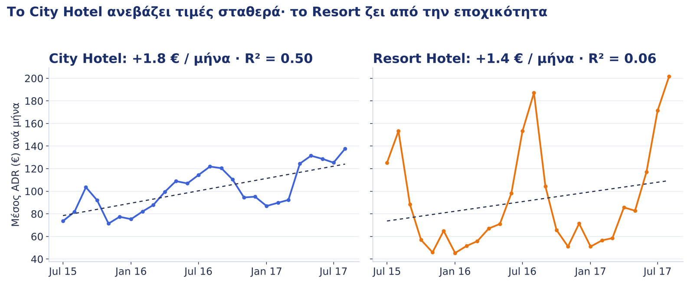
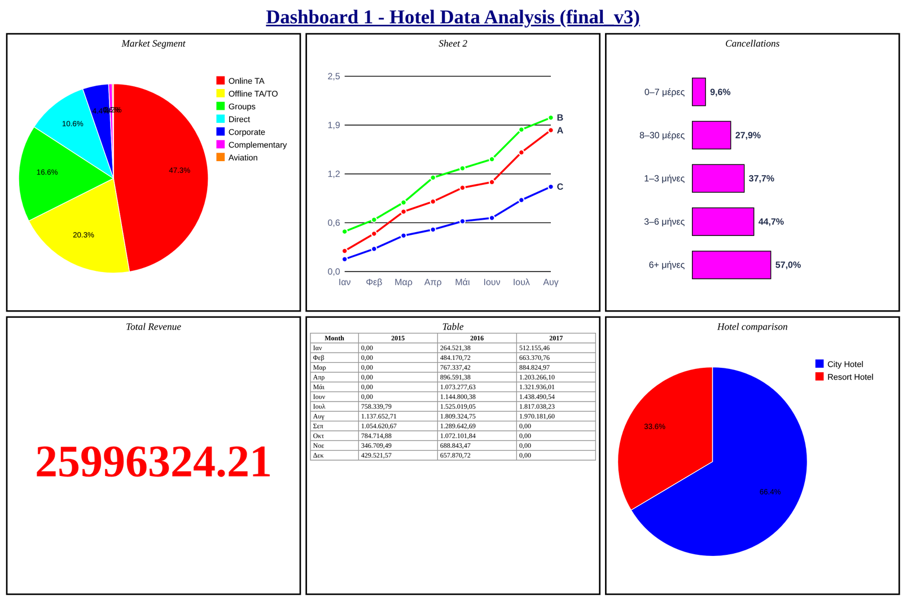

Από το dashboard στην απόφαση
Οδηγός εργαστηρίου σε 7 βήματα, το τελευταίο με Tableau. Τις δύο προηγούμενες εβδομάδες μάθαμε να βλέπουμε τα δεδομένα και να υπολογίζουμε δείκτες. Σήμερα κάνουμε αυτό που περιμένει ένας διευθυντής: συγκρίνουμε τα δύο ξενοδοχεία σε έναν πίνακα, προβλέπουμε τους επόμενους μήνες, μετράμε τη διαφορά από πέρυσι, σχεδιάζουμε ένα dashboard που διαβάζεται σε 10 δευτερόλεπτα, το κάνουμε Story και το παρουσιάζουμε σε 5 λεπτά. Τα checkpoints ελέγχονται πάνω στα πραγματικά νούμερα. Τα βήματα 2–4 γίνονται στο μάθημα, τα 5–7 είναι το παραδοτέο.
1. Ξεκίνημα: πού βρισκόμαστε μετά από δύο εργαστήρια
Cancellation Rate), το πρώτο dashboard.Rooms και Commission, πληρότητα και RevPAR, ομάδες lead time, καθαρά έσοδα, σύγκριση ετών, KPI tiles και ενέργεια φίλτρου.Άνοιξε το .twbx της Εβδομάδας 3 (αυτό με το dashboard «Revenue manager»). Όλα τα σημερινά φύλλα χτίζουν πάνω σε πεδία που έχεις ήδη. Αν κάποιο λείπει, ξαναφτιάξ᾽ το από τους τύπους παρακάτω· αν δεν έχεις το workbook, σύνδεσε ένα νέο με το hotel_bookings.csv και φτιάξε μόνο αυτά τα τρία.
2. Resort vs City: πέντε δείκτες σε έναν πίνακα
Μέχρι τώρα κάθε φύλλο έδειχνε ένα μετρούμενο μέγεθος. Ο διευθυντής θέλει τα δύο ξενοδοχεία δίπλα-δίπλα σε πέντε δείκτες μαζί. Στο Tableau αυτό γίνεται με δύο ειδικά πεδία που είδαμε φευγαλέα στο βήμα 5 της προηγούμενης εβδομάδας: Measure Names (τα ονόματα των μετρούμενων μεγεθών, διάσταση) και Measure Values (οι τιμές τους).
- Νέο φύλλο
Resort vs City. Hotel στο Columns. Σύρε το Measure Names (τελευταίο στις διαστάσεις) στο Rows και μετά το Measure Values (τελευταίο στα μετρούμενα μεγέθη) πάνω στο Text της κάρτας Marks. Εμφανίζεται ένας πίνακας με όλα τα μετρούμενα μεγέθη. - Στην κάρτα Measure Values που άνοιξε, σύρε έξω ό,τι δεν θέλεις. Κράτα πέντε: ADR, Nights, Lead Time (days), Guests, Cancellation Rate.
- Τα τέσσερα πρώτα είναι SUM. Σε καθένα: βελάκι του pill › Measure › Average. Το άθροισμα των νυχτών δεν λέει τίποτα· ο μέσος όρος λέει «πόσο μένει ο πελάτης». Το Cancellation Rate μορφοποίησέ το ως Percentage με 1 δεκαδικό (βελάκι › Format).
- Κάν᾽ το highlight table: Marks type Square, και σύρε ξανά το Measure Values πάνω στο Color. Επειδή οι πέντε δείκτες έχουν διαφορετικές κλίμακες (110 μέρες vs 2 άτομα), στο υπόμνημα χρωμάτων διάλεξε βελάκι › Use Separate Legends. Τώρα κάθε γραμμή χρωματίζεται μόνη της.
- Τίτλος φύλλου (διπλό κλικ στον τίτλο): γράψε το συμπέρασμα, όχι το θέμα. Π.χ. «Το Resort: μεγαλύτερες διαμονές, λιγότερες ακυρώσεις, χαμηλότερη τιμή».
| Δείκτης | City Hotel | Resort Hotel | Τι σημαίνει |
|---|---|---|---|
| Μέσος ADR | 105,2 € | 95,0 € | Το City πουλάει ακριβότερα τη νύχτα |
| Μέση διάρκεια (νύχτες) | 2,98 | 4,32 | …αλλά το Resort κρατάει τον πελάτη 45% περισσότερο |
| Μέσο lead time (μέρες) | 109,7 | 92,7 | Το City κλείνεται νωρίτερα (γκρουπ, συνέδρια) |
| Μέσα άτομα / κράτηση | 1,95 | 2,01 | Σχεδόν ίδιο· οικογένειες λίγο περισσότερες στο Resort |
| Ποσοστό ακυρώσεων | 41,7% | 27,8% | Το μεγάλο πρόβλημα του City Hotel |
3. Πρόβλεψη (forecast): οι επόμενοι 12 μήνες
Ως τώρα κοιτάζαμε πίσω. Ένας revenue manager πρέπει να πει πόσο προσωπικό, πόσα τρόφιμα και πόσες συμφωνίες με πράκτορες χρειάζεται τον επόμενο χρόνο. Το Tableau έχει ενσωματωμένη πρόβλεψη χρονοσειρών: κοιτάζει το μοτίβο των προηγούμενων μηνών (επίπεδο, τάση, εποχικότητα) και το προεκτείνει, με μια ζώνη αβεβαιότητας.
- Νέο φύλλο
Αφίξεις ανά μήνα. Arrival Date στο Columns και από το βελάκι διάλεξε Month από την κάτω ομάδα (continuous, πράσινο, δείχνει «May 2015»). Η πάνω ομάδα δίνει «Μάιος» χωρίς έτος, δηλαδή 12 μήνες μαζεμένους· η πρόβλεψη θέλει άξονα χρόνου που προχωρά. - Booking ID (Count) στο Rows. Σύρε το Canceled στα Filters › μόνο No: προβλέπουμε πραγματικές αφίξεις, όχι κρατήσεις που θα ακυρωθούν. Μια γραμμή με 26 σημεία, Ιούλιος 2015 – Αύγουστος 2017.
- Άνοιξε το πάνελ Analytics (η δεύτερη καρτέλα δίπλα στο Data) και σύρε το Forecast πάνω στο γράφημα, στο κουτάκι που εμφανίζεται. Δεξιά από τον Αύγουστο 2017 εμφανίζεται μια γραμμή με σκιασμένη ζώνη.
- Μενού Analysis › Forecast › Forecast Options…. Δες δύο πράγματα. Forecast length: βάλε Exactly 12 Months. Ignore last: 1 Month: το Tableau από προεπιλογή πετάει τον τελευταίο μήνα, γιατί συνήθως είναι ατελής (ακριβώς το quiz της προηγούμενης εβδομάδας), και τον εκτιμά κι αυτόν. Εδώ τα δεδομένα φτάνουν ως 31 Αυγούστου, οπότε δοκίμασε και 0 και δες πόσο μετακινείται η πρόβλεψη.
- Πέρνα το ποντίκι πάνω από ένα σημείο της πρόβλεψης: Estimate και Prediction interval (το κάτω και πάνω όριο της ζώνης). Μετά Analysis › Forecast › Describe Forecast: ποιο μοντέλο διάλεξε (Additive ή Multiplicative season) και πόσο καλά ταίριαξε στο παρελθόν (MAPE = μέσο ποσοστιαίο σφάλμα).

4. Σε σχέση με πέρυσι: % διαφορά και γραμμή τάσης
Την προηγούμενη εβδομάδα βάλαμε τρεις γραμμές, μία ανά έτος, και τις συγκρίναμε με το μάτι. Σήμερα ζητάμε από το Tableau να υπολογίσει τη διαφορά: «πόσο % πάνω ή κάτω από τον ίδιο μήνα πέρυσι». Αυτό δεν είναι υπολογιζόμενο πεδίο· είναι υπολογισμός πίνακα (table calculation), γιατί γίνεται πάνω στα ήδη αθροισμένα νούμερα του φύλλου, συγκρίνοντας ένα κελί με ένα άλλο.
Α. Percent Difference From: ο ίδιος μήνας πέρυσι
- Νέο φύλλο
Έσοδα vs πέρυσι. Arrival Date στο Columns ως Month discrete (πάνω ομάδα, μπλε). Revenue Kept στο Rows (SUM: τα έσοδα που πραγματοποιήθηκαν). Σύρε ξανά το Arrival Date στο Color και διάλεξε Year. Τρεις γραμμές, όπως πέρυσι… συγγνώμη, όπως την προηγούμενη εβδομάδα. - Βελάκι του pill SUM(Revenue Kept) › Quick Table Calculation › Percent Difference. Το pill αποκτά ένα τριγωνάκι (Δ). Αλλά κοίτα το γράφημα: συγκρίνει κάθε μήνα με τον προηγούμενο μήνα. Δεν είναι αυτό που θέλουμε.
- Ξανά βελάκι › Compute Using › Year of Arrival Date. Τώρα συγκρίνει με τον ίδιο μήνα του προηγούμενου έτους. Η γραμμή του 2015 εξαφανίζεται (δεν έχει «πέρυσι») και το 2016 ξεκινά από τον Ιούλιο. Βάλε Label › Show mark labels.
- Διάβασε το 2017: όλοι οι μήνες θετικοί, από +9% (Αύγουστος) ως +94% (Ιανουάριος, όταν το 2016 ήταν πολύ χαμηλά). Τίτλος-συμπέρασμα: «Κάθε μήνας του 2017 πάνω από το 2016».

Β. Γραμμή τάσης και R²: ανεβαίνουν οι τιμές;
- Duplicate το φύλλο
Αφίξεις ανά μήνα(δεξί κλικ στην καρτέλα του) και ονόμασέ τοΤάση ADR. Άλλαξε το Rows: βγάλε το Count και βάλε ADR › Measure › Average. Κράτα το φίλτρο Canceled = No. Αν έχει μείνει πάνω η πρόβλεψη, Analysis › Forecast › Show Forecast για να την κρύψεις. - Πάνελ Analytics › σύρε Trend Line › Linear. Πέρνα το ποντίκι πάνω από τη γραμμή: εξίσωση, R-Squared, P-value.
- Σύρε το Hotel στο Color. Δύο γραμμές, δύο τάσεις. Σύγκρινε τα R².

5. Τι κάνει ένα dashboard καλό
Έχεις πια 12+ φύλλα. Ένα dashboard δεν είναι «όλα τα φύλλα σε μία οθόνη». Είναι η απάντηση σε ένα ερώτημα για έναν αναγνώστη που έχει 10 δευτερόλεπτα. Δες τα δύο παρακάτω: ίδια δεδομένα, ίδιοι αριθμοί.


Έξι κανόνες
| Κανόνας | Στο Tableau |
|---|---|
| 1. Ένα ερώτημα, ένας αναγνώστης. «Πώς πάει το 2017 και τι να κάνω;» για τον διευθυντή. Ό,τι δεν απαντά, φεύγει. | 3–5 γραφήματα το πολύ. Τα υπόλοιπα φύλλα μένουν στο workbook ή πάνε σε δεύτερο dashboard. |
| 2. Οι μεγάλοι αριθμοί πρώτα. Το μάτι πάει πάνω αριστερά. Εκεί τα 3–4 KPI tiles. | Φύλλο με ένα μόνο μετρούμενο μέγεθος στο Text, γραμματοσειρά 36+. Το μάθαμε στο βήμα 7 της Εβδομάδας 3. |
| 3. Τίτλοι-συμπεράσματα. Ο τίτλος λέει τι βλέπεις, όχι ποιο πεδίο είναι στο Rows. | Διπλό κλικ στον τίτλο του φύλλου. Μία πρόταση, με αριθμό μέσα. |
| 4. Ένα χρώμα = μία έννοια. Αν το 2017 είναι πορτοκαλί σε ένα γράφημα, είναι πορτοκαλί παντού. Το σημαντικό με χρώμα, τα υπόλοιπα γκρίζα. | Κλικ στο υπόμνημα › Edit Colors. Για να τονίσεις μία μπάρα: Ctrl+κλικ πάνω της › Color. |
| 5. Χωρίς θόρυβο. Γραμμές πλέγματος, περιγράμματα, 3D, πίτες με πάνω από 3 κομμάτια, 8 ψηφία χωρίς διαχωριστικό. | Format › Lines › Grid Lines: None. Μορφοποίηση αριθμών: 26,0 εκ. αντί για 25.996.324,21 (Format › Numbers › Display units: Millions). |
| 6. Σταθερό μέγεθος και φίλτρα που πιάνουν παντού. Σχεδιάζεις για την οθόνη που θα το δουν. | Size › Fixed › Generic Desktop (1366×768) ή Custom 1200×800. Κάθε κάρτα φίλτρου: Apply to Worksheets › All Using This Data Source. |
Η άσκηση: ξαναχτίσε το «Revenue manager»
- Άνοιξε το dashboard της προηγούμενης εβδομάδας. Size › Fixed, Generic Desktop. Δες τι χαλάει: σ᾽ αυτό το μέγεθος θα το παρουσιάσεις.
- Πρόσθεσε ένα τέταρτο KPI tile
KPI Διανυκτερεύσεις: νέο φύλλο, Room Nights Sold στο Text, Format › Numbers › Display units Thousands. Βάλ᾽ το στη σειρά με τα άλλα KPI. - Αντικατάστησε ένα από τα παλιά γραφήματα με το
Έσοδα vs πέρυσι(βήμα 4). Κράτα 3 γραφήματα κάτω από τα KPI: ένα για «τι συνέβη» (έσοδα vs πέρυσι), ένα για «πού χάνουμε» (ακυρώσεις ανά lead time ή κανάλι), ένα για «τι έρχεται» (η πρόβλεψη). - Δώσε σε κάθε φύλλο τίτλο-συμπέρασμα. Ενοποίησε τα χρώματα των ετών (2016 μπλε, 2017 πορτοκαλί) σε όλα τα φύλλα. Σβήσε τις γραμμές πλέγματος.
- Από τα Objects σύρε ένα Text κάτω δεξιά: «Υποθέσεις: 200 δωμάτια, προμήθεια 18%. Πηγή: PMS, Ιούλ 2015 – Αυγ 2017». Ο αναγνώστης πρέπει να ξέρει τι κρύβεται πίσω από τους αριθμούς χωρίς να ρωτήσει.
6. Story: από τα φύλλα στην αφήγηση
Το dashboard είναι για να το εξερευνά κάποιος μόνος του. Όταν εσύ παρουσιάζεις, θέλεις να τον πας με τη σειρά από το ένα σημείο στο άλλο. Το Tableau το κάνει με το Story: μια ακολουθία από σημεία (story points), καθένα με ένα φύλλο ή dashboard και μία λεζάντα. Η δομή είναι πάντα η ίδια: τι συνέβη → γιατί → πού κινδυνεύουμε → τι προτείνω → τι περιμένουμε.
- Κάτω, δίπλα στις καρτέλες, το τρίτο εικονίδιο: New Story. Αριστερά κάτω Size: ίδιο με το dashboard σου (Generic Desktop), αλλιώς τα φύλλα θα στριμώχνονται. Δώσε τίτλο στο story (διπλό κλικ πάνω): «Resort & City Hotel: πώς πήγε το 2017 και τι κάνουμε το 2018».
- Σημείο 1 · Τι συνέβη: σύρε το φύλλο
Έσοδα vs πέρυσι. Στη λεζάντα (το κουτί πάνω, Add a caption): «Ιαν–Αυγ 2017: +23% έσοδα με μόλις +4% περισσότερες αφίξεις». - Blank › νέο σημείο. Σημείο 2 · Γιατί:
Τάση ADR. «Το City Hotel ανέβασε τιμές σταθερά, +1,8 € τον μήνα». - Σημείο 3 · Πού κινδυνεύουμε:
Ακυρώσεις ανά lead time(Εβδομάδα 3). «Οι κρατήσεις 6+ μήνες πριν ακυρώνονται στο 57%». - Σημείο 4 · Τι προτείνω: το dashboard «Revenue manager» με τις παραμέτρους ρυθμισμένες στο σενάριό σου. Λεζάντα: η πρόταση, π.χ. «Προκαταβολή 30% για κρατήσεις πάνω από 6 μήνες πριν· με 200 δωμάτια η πληρότητα Αυγούστου αντέχει overbooking 5%». Αν αλλάξεις φίλτρο ή παράμετρο μέσα στο story, πάτα Update στο σημείο για να κρατήσει τη νέα κατάσταση.
- Σημείο 5 · Τι περιμένουμε:
Αφίξεις ανά μήναμε την πρόβλεψη. «Αν συνεχίσει το μοτίβο, Σεπτ 2017 – Αυγ 2018 περίπου 38–40 χιλ. αφίξεις· ο χειμώνας μένει το αδύνατο σημείο». - Στο Layout (αριστερά) διάλεξε Caption boxes ή Numbers για την πλοήγηση. Δοκίμασε Presentation mode (F7 στο desktop) και πέρνα τα 5 σημεία χωρίς να μιλάς: αν βγαίνει νόημα μόνο από τις λεζάντες, είσαι έτοιμος.
7. Η παρουσίαση των 5 λεπτών και το παραδοτέο
Το πιο δύσκολο κοινό δεν είναι ο καθηγητής, είναι ο διευθυντής που έχει το επόμενο ραντεβού σε 5 λεπτά. Η δομή παρακάτω είναι η ίδια που θα χρησιμοποιήσετε στην τελική εργασία του μαθήματος.
| Χρόνος | Τι λες | Παράδειγμα |
|---|---|---|
| 0:00–0:30 | Το συμπέρασμα, σε μία πρόταση με αριθμό | «Το 2017 βγάλαμε 23% περισσότερα έσοδα με τους ίδιους σχεδόν πελάτες, και προτείνω να ασφαλίσουμε αυτό το κέρδος με προκαταβολή στις πρώιμες κρατήσεις.» |
| 0:30–2:00 | Τι συνέβη, 1–2 γραφήματα | Έσοδα vs πέρυσι· Resort vs City. Δείχνεις με το ποντίκι το ένα σημείο που μετράει, όχι όλο το γράφημα. |
| 2:00–3:00 | Γιατί | Τάση ADR: η τιμή ανέβηκε, οι αφίξεις κρατήθηκαν. |
| 3:00–4:00 | Τι προτείνω: απόφαση, κόστος, ρίσκο | «Προκαταβολή 30% πάνω από 6 μήνες. Κόστος: ίσως χάσουμε λίγες πρώιμες κρατήσεις. Ρίσκο αν δεν το κάνουμε: 57% ακυρώσεις σε 24.700 κρατήσεις.» |
| 4:00–4:30 | Τι περιμένουμε | Η πρόβλεψη, με τη ζώνη της: «1.900–2.700 τον Ιανουάριο». |
| 4:30–5:00 | Τι δεν ξέρουμε και επόμενο βήμα | «Υποθέσαμε 200 δωμάτια και 18% προμήθεια. Η πληρότητα είναι κατά προσέγγιση. Επόμενο βήμα: να το τρέξουμε με τα πραγματικά νούμερα από το PMS.» |
2. Μη διαβάζεις τίτλους. Ο τίτλος είναι το συμπέρασμα, εσύ λες το «άρα».
3. Δείχνε με το ποντίκι. Ο ακροατής δεν ξέρει πού να κοιτάξει.
4. Οι υποθέσεις δυνατά («με 200 δωμάτια»), πριν σε ρωτήσουν.
5. Χρονομέτρησέ την. Πέντε λεπτά είναι λιγότερα απ᾽ όσο νομίζεις.
«Πόσο σίγουρος είσαι;» (η ζώνη της πρόβλεψης, το R², οι υποθέσεις).
«Τι θα μου κοστίσει;» (κάθε πρόταση έχει τίμημα· αν δεν το έχεις σκεφτεί, δεν είναι πρόταση).
Παραδοτέο (μέχρι το επόμενο μάθημα)
.twbx (ή link Tableau Public) με το ανανεωμένο dashboard «Revenue manager» (βήμα 5) και το Story των 4–5 σημείων (βήμα 6).2. Την παρουσίαση των 5 λεπτών: ζωντανά στο επόμενο μάθημα ή ως βίντεο οθόνης με φωνή (έως 5:30).
3. Μία σελίδα κειμένου: η πρόταση προς τον διευθυντή σε 5 προτάσεις, με τον αριθμό που τη στηρίζει, την υπόθεση πίσω από τον αριθμό και το ρίσκο αν γίνει (ή δεν γίνει).
Τι ακολουθεί
Τελειώσαμε με το Tableau ως εργαλείο· τα δεδομένα θα επιστρέψουν με το Google Analytics σε λίγες εβδομάδες. Την επόμενη εβδομάδα αλλάζουμε οπτική: πώς φτάνει μια κράτηση στο ξενοδοχείο, ποιος μεσολαβεί (OTAs, metasearch, channel manager, booking engine), ποιος πληρώνει ποιον, και γιατί τα 3,5 εκατομμύρια προμήθειας που είδαμε στην Εβδομάδα 3 είναι το κόστος μιας ολόκληρης αγοράς που δεν ελέγχει το ξενοδοχείο.